ESP / ENG · Instrumento
Electronic music as an instrument
El uso del sintetizador modular desde la perspectiva y la disciplina del entrenamiento instrumental clásico.
Luis Codera Puzo · Barcelona, 1981 · Music & Thought
Composer, performer of modular synthesizers and electric guitar, curator. From one of the first concertos for modular synthesizer and orchestra to the ascetic economy of unison: the electronic instrument approached with the performative discipline and tactile precision of a classical instrument.
Scroll to ascend through the chapters ↓ eight rooms, from the oscillator to the score and ideas. Behind you, an analog wave settles into structure.
I · Agenda & Upcoming
Works in progress, solo modular synthesizer concert tours, and monographic recordings:
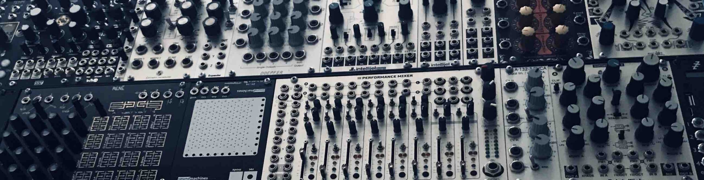
II · Trajectory & Education
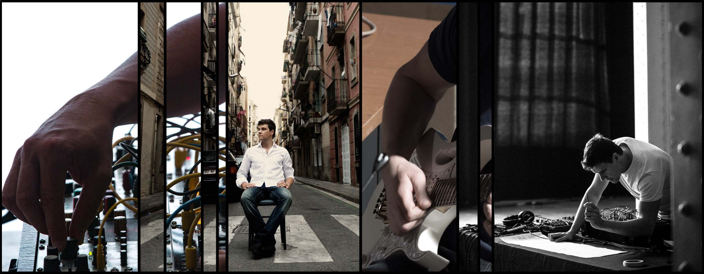
Luis Codera Puzo (Barcelona, 1981) is a composer, cultural manager, and performer of modular synthesizers and electric guitar. He has stood out for his active dedication to the modular synthesizer as a solo and chamber concert instrument, developing an instrumental technique focused on performativity and precise micro-interaction with other musicians. This approach has led to pioneering works such as MUR#03, one of the first concertos for modular synthesizer and orchestra (premiered by the OBC – Barcelona Symphony Orchestra), and Compression Music, created with support from the Leonardo Grants of the BBVA Foundation.
Acoustic music has also played a defining role in his career, oriented toward clarity and the idea in its most distilled form. Works such as Code is poetry (premiered by Quatuor Diotima at the Barcelona String Quartet Biennale) make use of unisons, repeated notes, and monolithic writing to open space for listening and bring out microscopic acoustic details that often go unnoticed — such as instrument beating and natural string vibrato.
Initially self-taught, he studied piano, trombone, electric guitar, and percussion before graduating in composition at ESMuC (with Agustí Charles) and completing the Solistenexam with Wolfgang Rihm at the Hochschule für Musik Karlsruhe. He has participated in masterclasses with Louis Andriessen, Kaija Saariaho, Enno Poppe, Beat Furrer, Georg Friedrich Haas, Unsuk Chin, and Pierluigi Billone. His music has been performed worldwide by Klangforum Wien, Ensemble Modern, Ensemble Intercontemporain, Quatuor Diotima, and ensemble recherche.
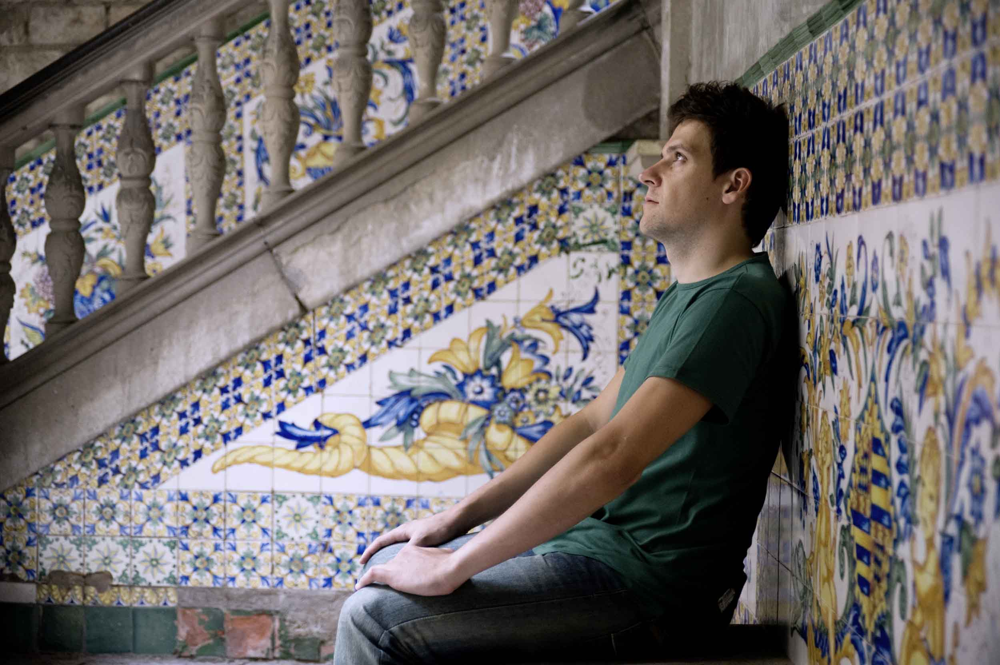
III · Catalogue of Works
Chamber, orchestra, solo instrument, and spatial electronics, categorized by ensemble:
MUR#02 (3 tuned pianos)
PITCH MATRIX
Piano I : A4 = 440 Hz · [C D E F# G# A#] (Escala por tonos enteros 0)
Piano II : A4 = 443 Hz · [+12 cents offset] (Batimiento acústico continuo)
Piano III : A4 = 437 Hz · [-12 cents offset] (Intersticio microtonal)
Synth : Dual VCO (Triangle/Saw) tracking 1V/Oct + Lowpass 24dB resonanceNon-tempered acoustic tunings generating continuous interference and beating patterns in physical space.
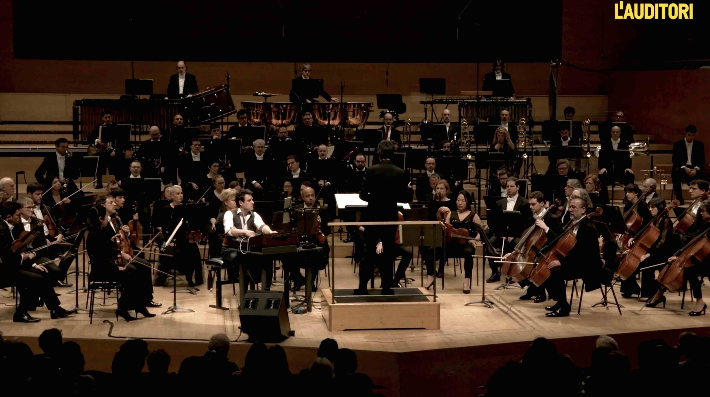
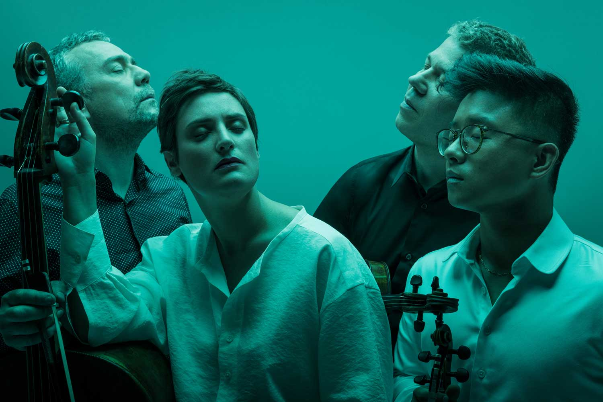
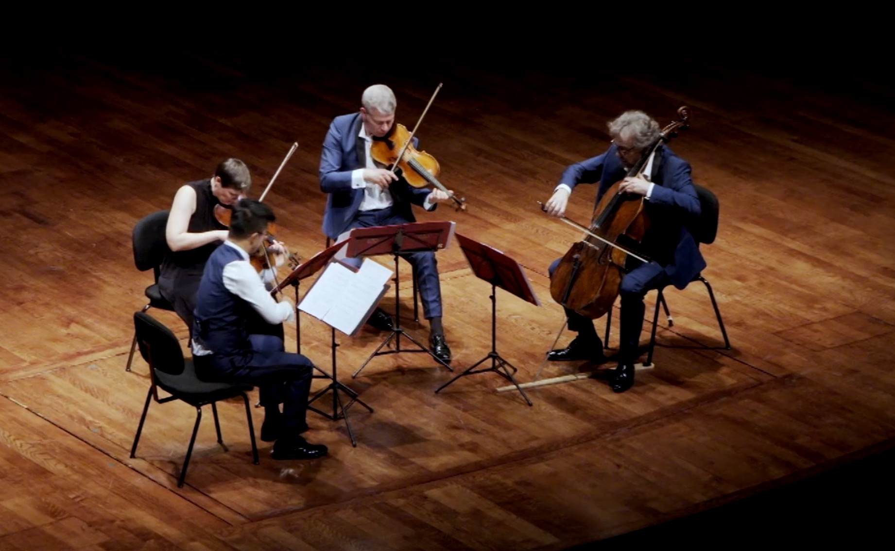
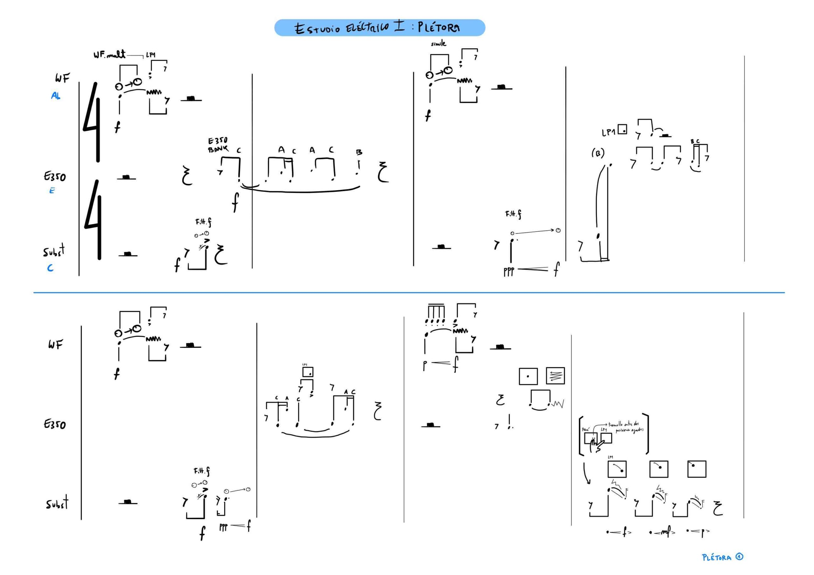
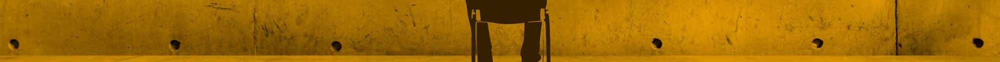
IV · The Modular Synthesizer · Manifesto & Technique
One of the most evident dangers in contemporary electronic music lies in the fetishistic consideration of the instrument: the machine exhibited as an advertising slogan or a visual fetish rather than as a rigorous medium of musical articulation.
The modular synthesizer is not a toy for random bleeps or automated effects. It is a physical concert instrument where every cable, attenuator, and voltage must answer to the same interpretative discipline as the bow of a violin or the embouchure of a flute. We play with our hands, shaping envelope, dynamics, and breath in real time.
EURORACK SIGNAL FLOW
VCO 1 (Triangle) ──┐
├──> [VCF 4-Pole 24dB] ──> [VCA] ──> Live Output (Direct)
VCO 2 (Sub Sine) ─┘ ▲ ▲
│ │
[Manual Pressure / Ribbon] ──┴──────────────────┘ (Direct tactile dynamic control)Zero presets or external automation: tactile, direct manual control over gain and timbral cutoff.
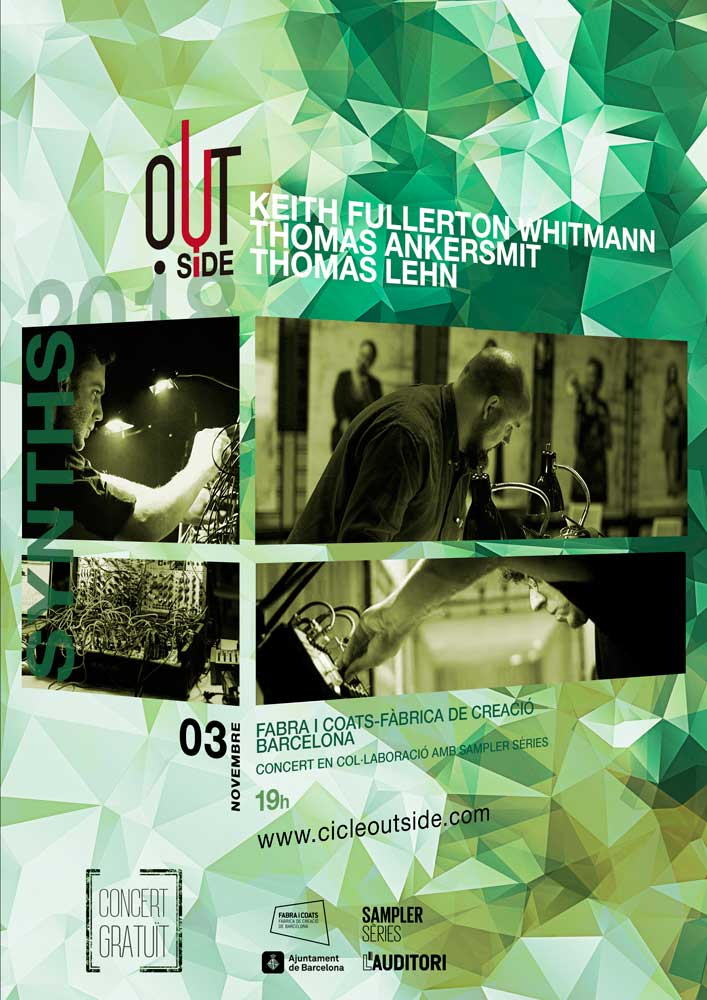
Eight harmonic tones based on just intonation ratios and analog intervals. Computed entirely via Web Audio API on your machine, zero external audio files.
V · Comisariado & Estructuras
El comisariado y la gestión de proyectos ligados a la nueva música no son un añadido administrativo, sino la forma de ser activamente crítico con las inercias del entorno cultural y musical.
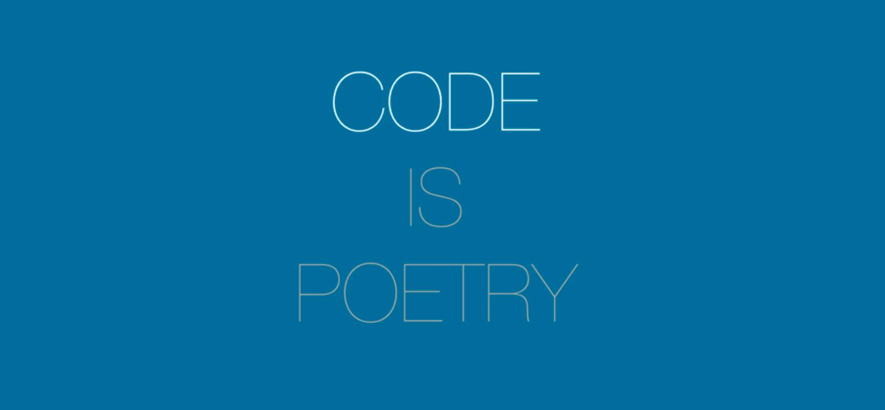
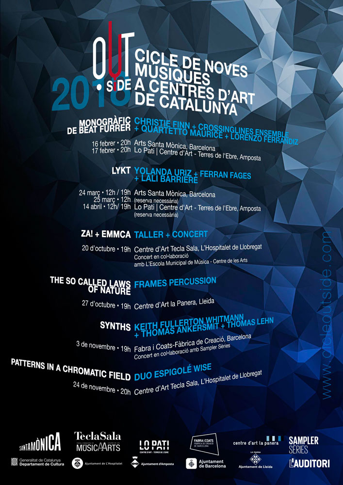
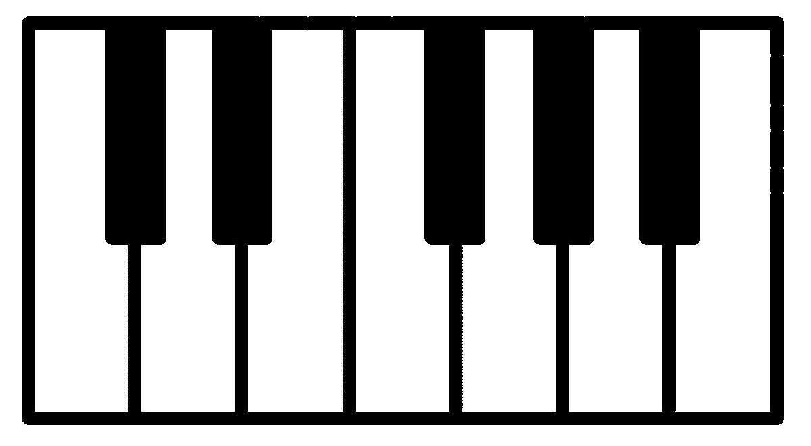
«Escuchar la música de los demás con rigor es la primera condición para poder escribir la propia.»
VI · Ideas, Texts & Essays
A selection of aesthetic, technical, and sociological essays written by Luis Codera Puzo. Click any card to open the typography-focused reader:
El uso del sintetizador modular desde la perspectiva y la disciplina del entrenamiento instrumental clásico.
Crítica al fetichismo del material en la música electrónica y defensa de la dedicación performativa.
Desmontando los lugares comunes del gremio de compositores y la trampa del eslogan «ser uno mismo».
Sobre el estreno de la obra por el Quatuor Diotima y cómo el uso del código revela la naturaleza de la escucha.
Extenso tratado sobre la unificación de timbre, afinación y duración en la composición acústica contemporánea.
La investigación financiada por la Beca Leonardo: compresión dinámica, acústica y electrónica en un solo cuerpo.
La aceleración cultural y la pérdida de la capacidad de sostener una atención dilatada en el tiempo.
Análisis incisivo sobre las estructuras de poder, redes de favores e inercias del entorno compositivo.
Reflexión crítica sobre el relato institucional y la construcción de identidades en la creación contemporánea.
Notas sobre el retorno nostálgico a la tonalidad frente a la conquista de una especificidad sonora irreductible.
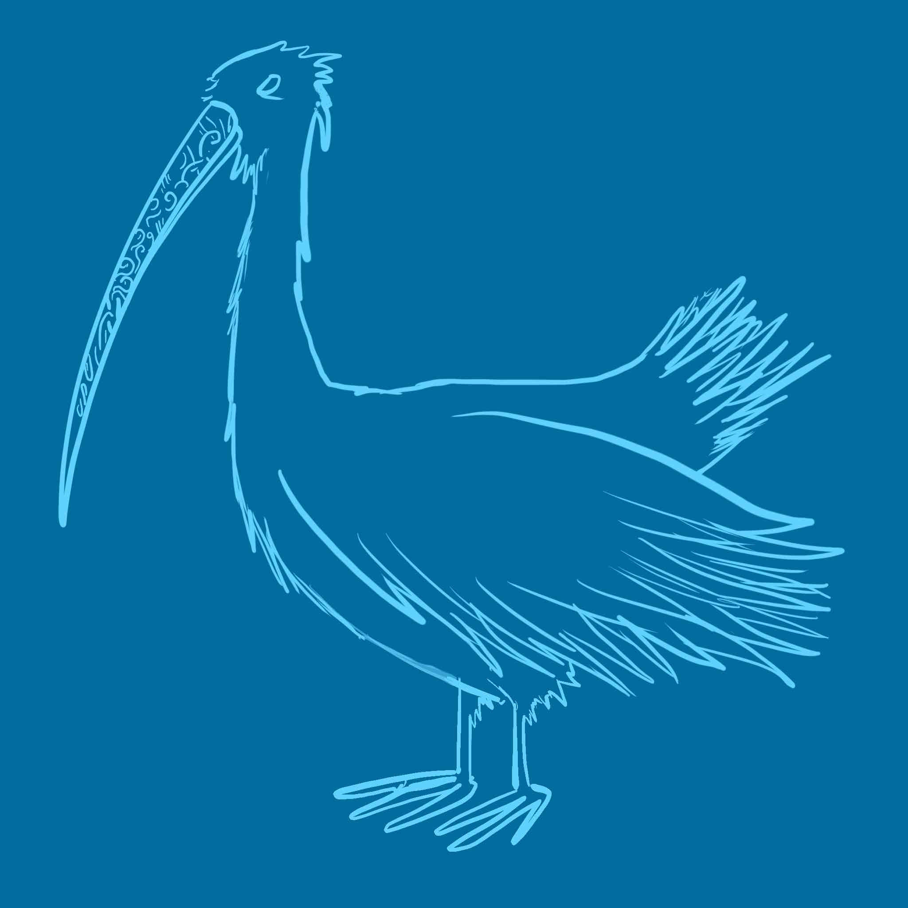
Relato y exploración de especies sonoras ficticias catalogadas con rigor etnográfico.
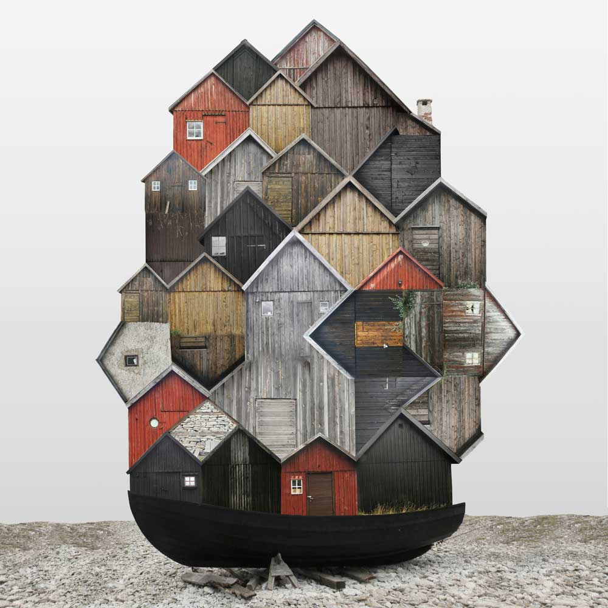
Refugio sonoro, memoria y escucha profunda entre el espacio y el aislamiento.
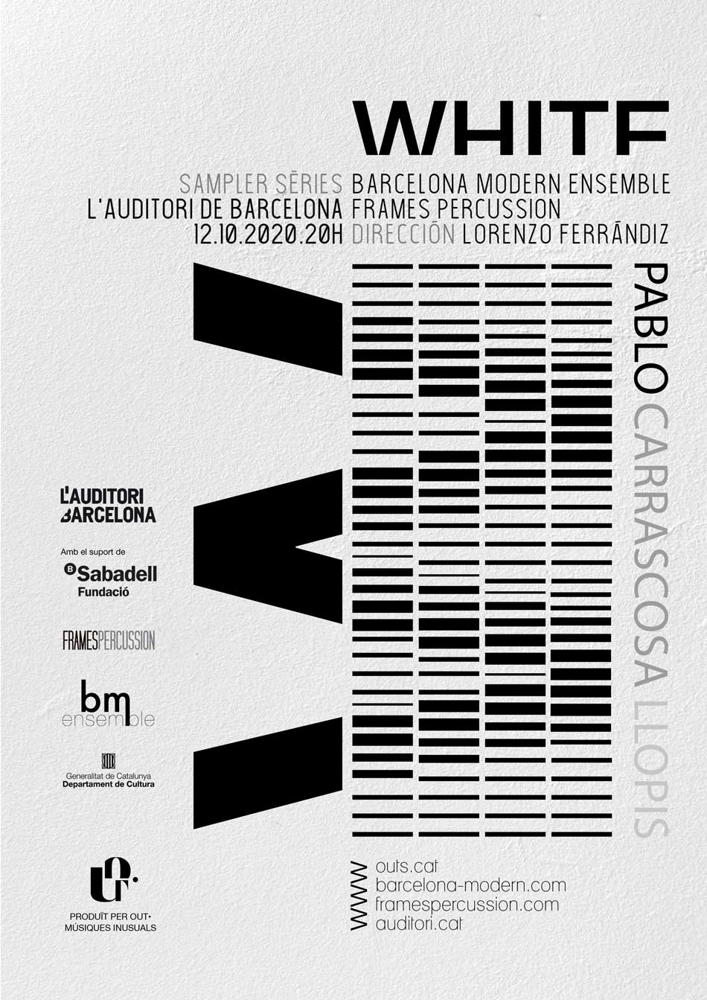
El color blanco como saturación de todas las frecuencias y espacio de neutralidad pura.
Reflexiones condensadas sobre la acústica, el comportamiento de los materiales y los límites del autor.
VII · Discography & Contact
Monographic recordings and releases with independent high-fidelity labels:
For inquiries regarding commissions, scores, performances, or lectures: